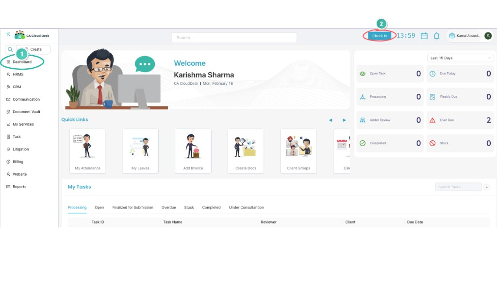
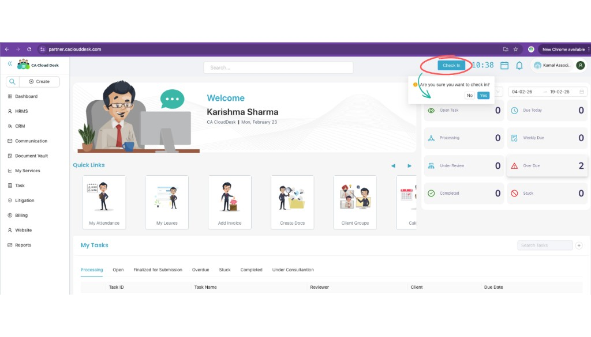
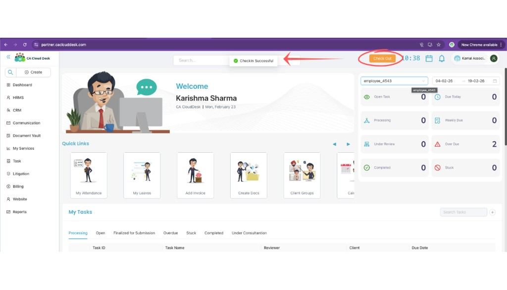
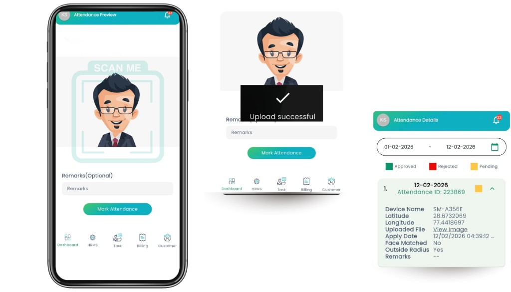

My Attendance
Mark your daily attendance from the desktop (Check In on Dashboard) or the mobile app (Mark Attendance with face upload). View check-in/check-out times and status in HRMS → My Attendance.
Overview
The My Attendance module lets you record daily attendance in two ways:
- Desktop — Use the Check In button on the Dashboard; at end of day use Check Out.
- Mobile app — Use Mark Attendance with face capture and optional remarks.
Attendance is stored with date & time, device details, location (latitude & longitude), face match verification, and optional remarks. Managers can approve or reject from the Manager Approval module.
Method 1: Mark attendance from desktop (web portal)
Login
Log in to CA Cloud Desk. You will land on the Dashboard.

Click “Check In”
On the top right corner, click the Check In button. Confirm when asked. The system records current time, login date, and user details.

Attendance recorded
After Check In, attendance is marked successfully. You will see a success message and the button will change to Check Out. At the end of the day, click Check Out to complete the working session.

View attendance records
Go to HRMS → My Attendance. Select a date range to see your records. You can view:
- Check In time
- Check Out time
- Status: Approved / Pending / Rejected
You can also open My Attendance from the Dashboard Quick Links (My Attendance card).
Method 2: Mark attendance from mobile app
You can mark attendance through the CA Cloud Desk mobile app using face capture.
Login to the mobile app
Open the CA Cloud Desk app, log in with your credentials, and go to the Dashboard.
Tap “Mark Attendance”
Tap Mark Attendance. The camera screen opens — position your face inside the frame. The system captures the image.

Add remarks (optional)
Enter remarks if needed, for example: Work From Client Location, Field Visit, or Late Entry Reason.
Submit attendance
Tap Mark Attendance to submit. You will see ✔ Upload Successful. Attendance is then recorded.
Attendance details captured
The system stores the following for each attendance entry:
Attendance status meaning
| Status | Meaning |
|---|---|
| Approved | Attendance verified and approved |
| Pending | Waiting for manager approval |
| Rejected | Attendance rejected |